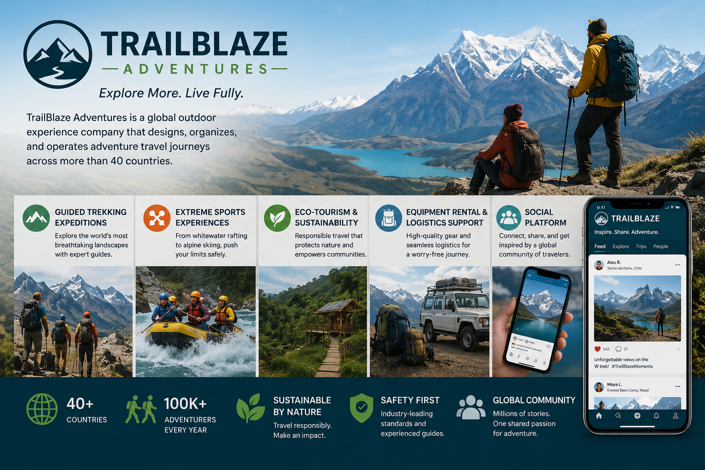

Company Overview — “TrailBlaze Adventures”
TrailBlaze Adventures is a global outdoor experience company that designs, organizes, and operates adventure travel journeys across more than 40 countries.
Its offerings include:
- Guided trekking expeditions (e.g., Himalayas, Andes)
- Extreme sports experiences (rafting, climbing, skiing)
- Eco-tourism and sustainability-focused travel
- Equipment rental and logistics support
- A proprietary social platform where travelers share experiences, media, and reviews
Organizational Structure
TrailBlaze operates with a distributed, digital-first architecture, combining physical operations with global IT systems.
Core Business Functions
| Function | Description |
|---|---|
| Marketing & Sales | Digital campaigns, influencer partnerships, personalized travel recommendations |
| Product Management | Design of travel packages, pricing, and partnerships with local operators |
| Operations & Logistics | Coordination of guides, transport, safety protocols, and equipment |
| Rental Services | Inventory and tracking of gear (GPS, climbing gear, tents) |
| Customer Platform | Booking system, payments, profiles, travel history |
| Social Platform | User-generated content (photos, videos, reviews, messaging) |
| Support Services | 24/7 global support, emergency response coordination |
| Finance & Compliance | Payments, refunds, taxation, regulatory compliance |
Digital Ecosystem
TrailBlaze relies heavily on interconnected systems:
Cloud
Cloud-based infrastructure
Multi-region deployment
Mobile
Mobile apps
For customers and field guides
IoT
IoT devices
GPS trackers, smart wearables for safety monitoring
Payments
Payment systems
Multi-currency, global providers
Analytics
Data analytics platform
User behavior, recommendations
Social
Social media platform
Profiles, messaging, media uploads, community groups
Security Context
This company has a complex attack surface:
- Global users and employees
- Sensitive personal data (identity, health, travel data)
- Real-time safety-critical systems (GPS, emergency alerts)
- Financial transactions
- Public-facing social platform (high abuse risk)
Security SWOT Analysis
🟢 Strengths (Internal Positive)
1. Cloud-native Architecture
- Scalable infrastructure with built-in redundancy
- Ability to implement modern security controls (IAM, monitoring, encryption)
2. Centralized Identity Management
- Unified login across booking, rental, and social platform
- Potential for strong IAM (SSO, MFA, federation)
3. Data-driven Operations
- Strong logging and analytics capabilities
- Enables threat detection and behavioral monitoring
4. Global Standardization
- Security policies can be centrally defined and enforced
- Opportunity for consistent compliance across regions
5. Modern Development Practices
- DevOps pipelines allow integration of DevSecOps
- Automated testing and deployment improve patching speed
🔴 Weaknesses (Internal Negative)
1. Large Attack Surface
- Multiple platforms (web, mobile, IoT, social)
- Many integration points → increased vulnerability exposure
2. Complex Identity Landscape
- Customers, guides, partners, admins
- Risk of privilege misconfiguration and identity sprawl
3. Third-party Dependencies
- Local guides, logistics providers, payment systems
- Limited control over partner security posture
4. Social Platform Risks
- User-generated content → XSS, abuse, phishing vectors
- Moderation and data privacy challenges
5. Field Operations Security
- Remote environments with poor connectivity, unmanaged devices, physical security risks
🟡 Opportunities (External Positive)
1. Zero Trust Implementation
- Ideal use case: global, distributed workforce
- Continuous authentication for guides, partners, and users
2. Advanced Monitoring & AI
- Behavioral analytics for fraud detection
- Threat intelligence integration for global threats
3. Security as a Brand Differentiator
- Positioning as a “safe adventure provider”
- Trust increases customer retention and partnerships
4. Privacy-by-Design Expansion
- Strong GDPR / international compliance posture
- Competitive advantage in handling sensitive traveler data
5. Secure IoT Innovation
- Enhanced safety systems (real-time tracking, alerts)
- Opportunity to lead in secure adventure tech
🔵 Threats (External Negative)
1. Cyber Attacks on Customer Platform
- Credential stuffing, account takeover
- Payment fraud and identity theft
2. Social Engineering
- Targeting support staff or guides
- Phishing via social platform messaging
3. Data Breaches
- Exposure of personal, location, or health data
- Regulatory and reputational impact
4. Supply Chain Attacks
- Compromised third-party software or partners
- Malicious updates or integrations
5. Physical + Cyber Combined Risks
- Theft or tampering of field devices
- GPS manipulation or tracking interference
6. Regulatory Complexity
- Different data protection laws across regions
- Risk of non-compliance penalties
Teaching Value (Why this case works)
This scenario enables you to cover all 8 CISSP domains in one coherent system:
- Domain 1: Risk, governance, compliance (global operations)
- Domain 2: Data classification (customer + health + location data)
- Domain 3: Architecture (cloud, IoT, mobile)
- Domain 4: Network security (global connectivity, APIs)
- Domain 5: IAM (users, guides, partners)
- Domain 6: Testing (platform + app + APIs)
- Domain 7: Operations (SOC, incident response, monitoring)
- Domain 8: Software security (social platform, mobile apps)